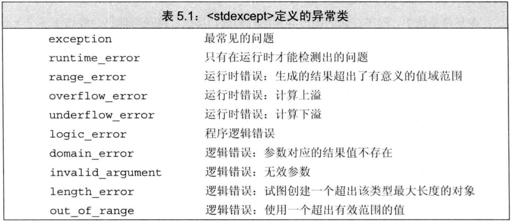

C++ primer 第5章 语句
文章目录
- C++提供了一组
控制流语句，包括条件执行语句、循环语句、跳转语句。
简单语句
- 一个
表达式末尾加上分号就成了表达式语句。表达式语句的作用是：执行表达式，丢弃求值结果。语句中的表达式在求值时经常有其他效果，如赋值等。 - 最简单的语句是
空语句，是一个单独分号; - 多余的分号并不总是无害的，如if、for、while的括号后。
复合语句是用花括号{}括起来的语句和声明序列，也称为块。一个块是一个作用域。块中引入的名字只能在块内（包括嵌套于其中的块内）访问。- 语法上需要一条语句，但逻辑上需要多条语句时使用语句块。如if、for、while的循环体
- 块结尾不需要分号。
空块是指内部没有语句的一对花括号
语句作用域
- 可在if、switch、while、for的
控制结构内定义变量，定义在控制结构中的变量只在相应的语句内部可见。由于这些变量马上要被使用，故必须初始化。
条件语句
- C++提供了
if和switch两种条件语句
if语句
- if语句作用：判断一个指定条件是否为真，根据结果决定是否执行另一条语句。
|
|
- else分支可省略
- if-else语句可嵌套
- 多个if或多个else时的匹配问题（悬垂else）：else总与它上面离他最近的尚未匹配的if匹配。
switch语句
- switch语句使我们可在若干固定选项中做选择
|
|
- switch语句先对括号内表达式求值，表达式的值转为整型后与每个case标签的值比较。如匹配成功，则从匹配处开始顺序执行下面的所有case分支，除非显式中断。
- 为避免执行所有case分支，常用
break中断switch语句。 - case关键字及其对应值一起称为
case标签，对应的值必须为整型常量表达式。同一个switch内不能存在相同的case标签。 default也是一种特殊的case标签，当没有一个case标签能匹配求值语句的值时执行default- 例子：合并多个分支：
|
|
- C++不允许跨过变量的初始化语句，直接跳转到其作用域的另一个位置。
- 例子：case分支中声明和定义变量
|
|
- 如果要为某case分支定义并初始化一个变量，应该把变量定义在块内，确保对其他case分支不可见
迭代语句
- 迭代语句通常称为
循环。while和for在执行前检查条件，do-while在执行后检查条件。
while语句
- while语句重复执行循环体，直到条件不为真。
|
|
- while的条件部分可以是表达式或是带初始化的变量声明，在条件中或循环体内定义的变量在每次迭代都要重新创建到销毁。
传统的for语句
|
|
- init-statement必须是声明语句、表达式语句、空语句中的一种，它只在循环开始时执行一次，不会重复执行。
- init-statement可定义多个变量，但只能有一条声明语句，故它们基础类型必须相同。
- expression在每次迭代之后执行。
- for语句头可省略init-statement、condition、expression中的一个或全部，但分号不可省略。省略condition相当于用
true代替。 - for语句头中定义的名字只在语句头和循环体内可见
范围for语句
|
|
- expression必须是
序列，如：花括号的初值列表、数组、vector或string等的对象（这些对象都能由begin和end返回迭代器） - declaration定义一个变量用于访问元素，为确保类型相容经常用auto。如要修改元素，必须声明为
引用 - 每次迭代时都会重新定义循环变量，然后再执行statement
- 范围for的定义来源于与之等价的传统for，因此不能在范围for中修改序列的大小（会使迭代器无效）。
- 例子：范围for和传统for
|
|
do-while语句
|
|
- do-while每次先执行循环体再检查条件。循环体至少执行一次
- 该语句最后有分号标志结束
- condition不能为空
- condition使用的变量必须定义在循环体外
- condition中不能定义变量，否则第一次在循环体中使用时未定义。
跳转语句
- 用于中断当前的执行过程，包括4种：
break、continue、goto、return
break语句
- break终止离它最近的while、do-while、for、switch，从它们之后的第一条开始执行。break只能出现在循环或switch内
continue语句
- continue终止最近循环中的当前一次迭代，并开始下一次迭代。只能出现在for、while、do-while内
goto语句
- goto无条件跳转到同一函数内的另一条语句
- goto的目标是
带标签语句，它是在语句前加一个标签标示符和冒号。由于标签标示符独立于变量或其他标示符的名字，故标签标示符可与其他变量同名，不会干扰 - goto不能用于从变量作用域外跳到作用域内（越过声明语句执行），因为未声明。
- goto可以跳转到已定义的对象的定义之前，这意味着该变量将被销毁并重新创建。
try语句块和异常处理
异常：运行时的反常行为，超出了函数正常功能的范畴- 异常处理机制包括：
异常检测和异常处理 - 异常检测部分使用
throw表达式表示遇到异常。一般说throw引发（raise）了异常 - 异常处理部分使用
try语句块来处理。try语句块以try开始，以一个或多个catch子句结束。try语句块中抛出的异常将被某个catch子句处理。 - C++定义了一套
异常类，用于在throw表达式和相关catch子句间传递异常的具体信息。
throw表达式
- throw表达式包含throw关键字和紧随其后的一个表达式，如
throw statement，表达式的类型是抛出异常的类型。 - 类型
runtime_error是异常类的一种，定义于stdexcept头文件中。runtime_error必须由一个string对象或C风格字符串来初始化。
try语句块
|
|
- catch子句括号中是
异常声明，按照某种异常类型声明该类型的变量，捕获到该类型异常时，为该变量赋值。 - try中是可能抛出异常的程序，抛出异常后与各catch子句捕获异常的类型对比，并执行匹配的catch子句。
- try语句块中声明的变量在块外无法访问，即使是catch中也不行。
- 例子：抛出并处理异常
|
|
- 如果有嵌套的异常处理，即try中可能调用了包含另一个try语句块的函数，则捕获异常顺序与函数调用顺序相反，沿着执行路径回退来找适合的catch
- 如果抛出了异常，且不存在匹配的catch，则程序调用标准库函数
terminate，该函数使程序非正常退出，其具体行为与系统有关。 - 在异常发生期间能正确执行“清理”工作的程序称为
异常安全的代码。编写异常安全的代码非常困难，必须清楚异常何时发生，发生后程序如何确保对象有效、资源无泄露、程序处于合理状态，等
标准异常
- C++定义了一组
异常类，定义在4个头文件中exception头文件定义最通用的异常类exception，它只报告异常的发生，不提供任何信息stdexcept头文件定义了几种常见异常类，见表5.1new头文件定义了异常类bad_alloctype_info头文件定义了异常类bad_cast
- 标准库异常类只定义了几种运算：创建、拷贝、赋值。
- 对exception、bad_alloc、bad_cast只能使用默认初始化，不可提供初始值。其他异常类相反，不可默认初始化，必须提供string对象或C风格字符串做初值。
- 每个异常类定义了
what方法，该方法没有参数，返回值是指向C风格字符串的const char *，该字符串提供异常相关的文本。若该异常类型有字符串初始值，则what返回该字符串，若无初始值，则what返回值由编译器决定。